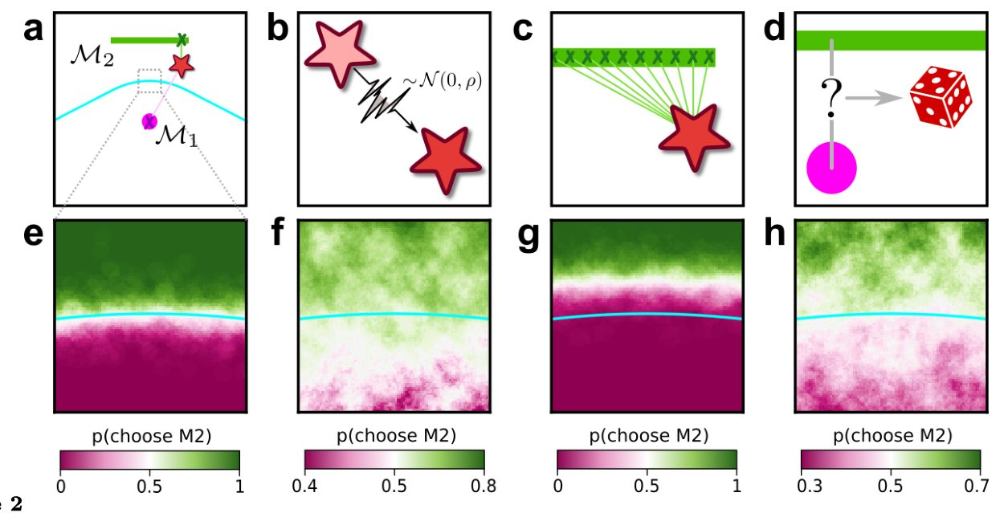
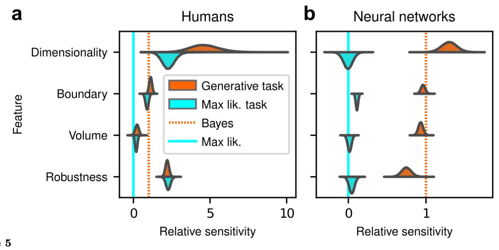
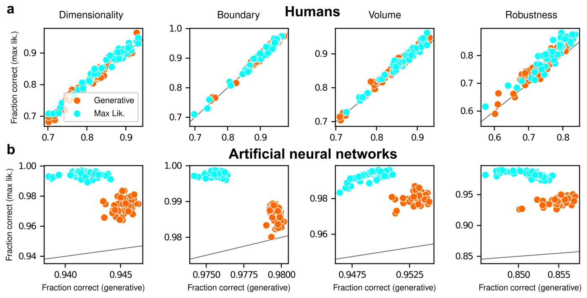
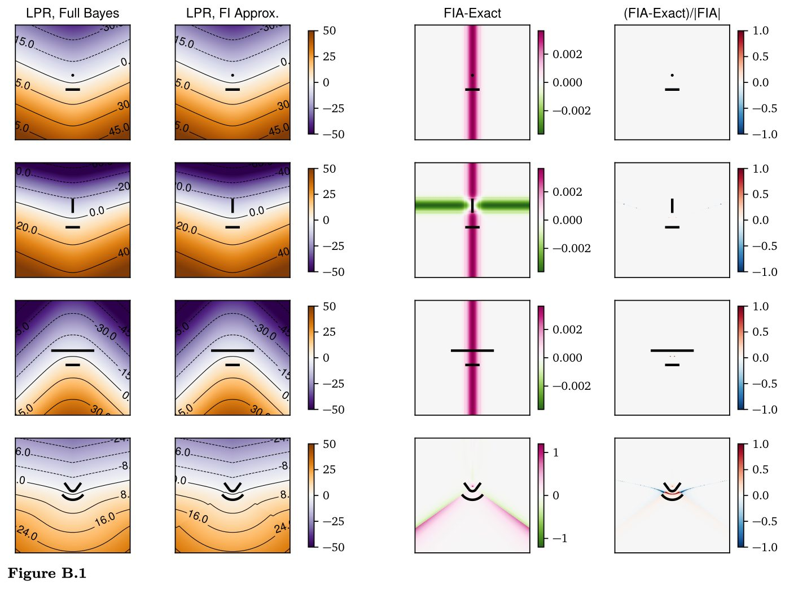
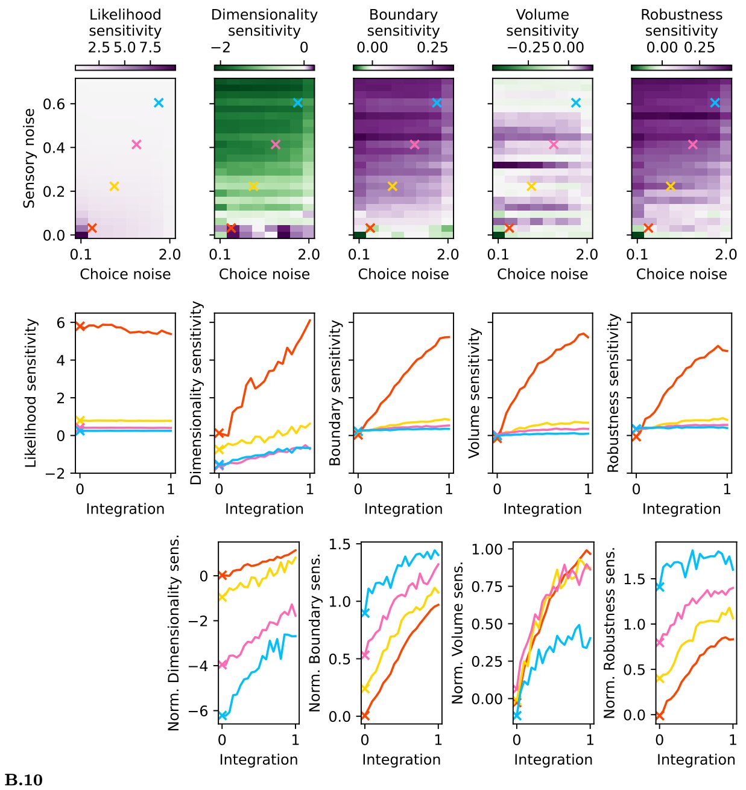
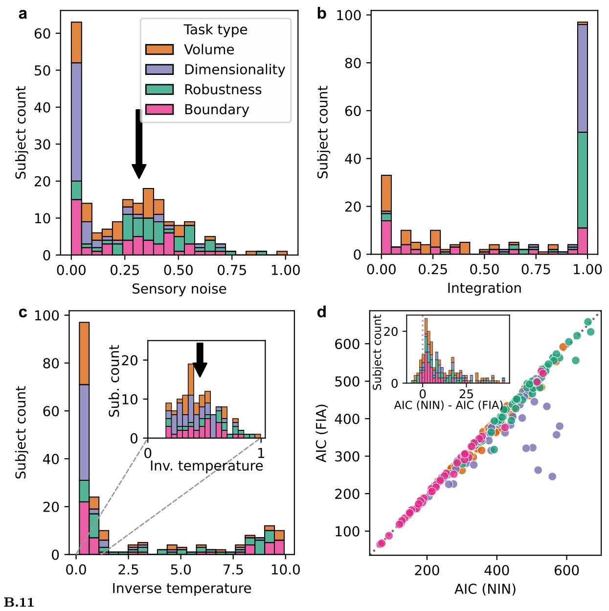
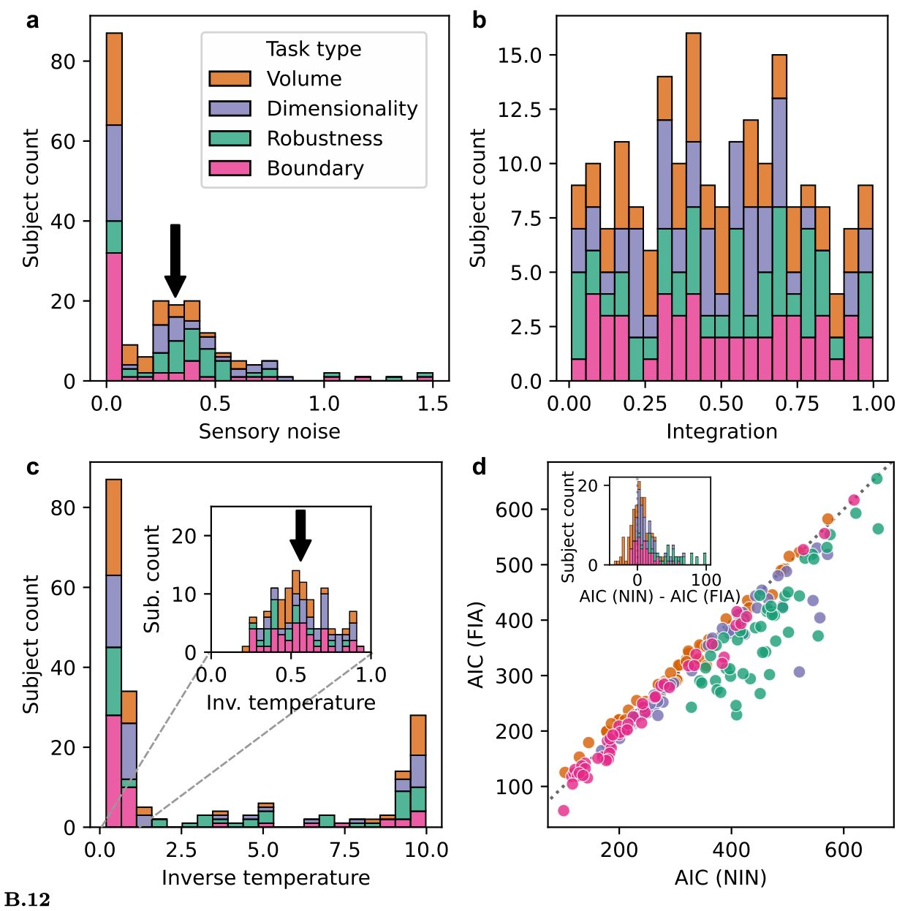

Ми қарапайым түсіндірмелерді қалай таңдайды

Белсіздік жағдайында шешім қабылдаған кезде миымыз күрделі емес, қарапайым нұсқаларды таңдайды. Жаңа зерттеу бұл жай әдет емес, нақты математикалық есептеу екенін көрсетті. Адамдардың мінез-құлқы кездейсоқ деректерге тым бейімделіп кетуден сақтайтын статистикалық модель таңдау теориясына сәйкес келеді. Ал жасанды нейрондық желілер мұны әрдайым қайталай бермейді.
Басты ойлар
- Адамдар шулы деректерде қарапайым түсіндірмелерді қалайды
- Қатысушылардың таңдауы байестік модельдерге сәйкес келеді
- Нейрожелілер бұл қарапайымдылық бейімділігін көрсетпейді
Толығырақ
Зерттеушілер адамдардың шулы әрі толық емес деректер негізінде қалай шешім қабылдайтынын талдады. Тәжірибе барысында қатысушылар он нүкте белгілі бір фигурамен жасалғанының ықтималдығын бағалады. Авторлар модель күрделілігіне берілетін айыппұлдарды өлшеу үшін Фишер ақпаратын жақындату әдісін қолданды. Адамдардың таңдауы барлық ықтимал жасырын себептерді біріктіру ережелеріне дәл сәйкес келетіні анықталды.
Мұндай біріктіру кез келген шуға үйлесе алатын тым икемді түсіндірмелерді шектейді. Адамдар бұл қарапайымдылыққа ұмтылысты тиімсіз жағдайларда да сақтайтыны байқалды, бірақ кейбір жасанды нейрожелілерде бұл қасиет жоқ. Бұл статистикалық модельдеу қағидаттарының адам танымы үшін маңызды екенін көрсетеді.
Шектеулер
Жұмыс басқарылатын мінез-құлық эксперименттеріне негізделген және мидың нейрондық белсенділігін тікелей зерттемейді.
Мақаланың толық аудармасы
Түйіндеме
Оккам ұстарасы — бұл барлық жағдайлар тең болғанда, күрделі түсініктемелерге қарағанда қарапайым түсініктемелерге артықшылық беру керек деген қағида. Бұл қағида адамның шешім қабылдауына бағыт береді деп есептеледі, алайда бұл әсердің табиғаты белгісіз. Біз бұл жұмыста алдын ала тіркелген мінез-құлық эксперименттерін қолдана отырып, адамдардың анық емес деректер үшін екі балама түсініктеменің ішіндегі қарапайымына артықшылық беруге бейім екенін көрсеттік.
Маңызды
Адамдар жүйелі түрде қарапайым түсініктемелерді таңдайды, бұл шамадан тыс икемділікті жазалайтын модель таңдаудың ресми теорияларымен сандық тұрғыдан сәйкес келеді.
Бұл артықшылықтар шамадан тыс икемділік үшін айыппұл салатын модель таңдаудың ресми теорияларының болжамдарымен сандық тұрғыдан сәйкес келеді. Мұндай жазалау шаралары тек ең жақсы түсініктемені ғана емес, сонымен қатар барлық мүмкін болатын тиісті түсініктемелер бойынша интегралды ескергенде пайда болады. Біз сондай-ақ қарапайымдылыққа деген бұл артықшылықтардың адамдарда сақталатынын, бірақ кейбір жасанды нейрондық желілерде, тіпті олар бейімделмеген мінез-құлыққа әкелсе де, байқалмайтынын көрсетеміз.
Түсіндірме
Модель таңдау (model selection) — бұл деректерге сәйкестік дәлдігі мен модельдің күрделілігі арасындағы тепе-теңдікті ескере отырып, үміткерлер жиынтығынан ең қолайлы модельді таңдаудың статистикалық әдісі.
Біздің нәтижелеріміз шулы деректерге шамадан тыс бейімделудің (overfitting) алдын алу үшін мүмкін болатын жасырын себептер бойынша интеграцияны қамтитын статистикалық модель таңдаудың принципті тәсілдері адамның шешім қабылдауында орталық рөл атқаруы мүмкін екенін болжайды.
Кіріспе
Шешім қабылдаудағы қарапайымдылық принциптері
Нақты жағдайларда шешім қабылдау үшін біз жиі шулы және сирек деректер үшін бірнеше орынды түсіндірмелердің арасынан таңдау жасауымыз керек. Бәсекелес түсіндірмелерді бағалау кезінде Оккам ұстарасы (Occam’s razor) біз тек бақыланатын деректерді қаншалықты жақсы түсіндіретінін ғана емес, сонымен қатар бақыланбаған балама және әлеуетті маңызды емес деректерді сипаттаудағы әлеуетті артық икемділігін де ескеруіміз керектігін айтады (мысалы, «мұны елес жасады!»; Сурет 1a, b). Мұндай қарапайымдылық артықшылығы ұзақ уақыт бойы психикалық функцияны ұйымдастырушы принцип ретінде ұсынылған, мысалы, Гештальт психологиясындағы Prägnanz түсінігінде, көру үшін бірқатар «минималды принциптерде» және когнитивті процестерде деректерді сығудың орталық рөлін белгілейтін теорияларда. Қарапайымдылық, сонымен қатар, түсіндіру құндылығының кеңірек теориялары аясында түсіндірудің артықшылықтарын бағалауға көмектесетін негізгі сипаттамалардың бірі ретінде ұсынылған.
Маңызды
Когнитивті ғылымдардағы Оккам ұстарасы адам миы шулы деректерге шамадан тыс икемделіп қалмау үшін қарапайым түсіндірмелерге басымдық беретінін көрсетеді.
Көптеген мінез-құлық зерттеулері адамдардың әртүрлі тапсырмаларды, соның ішінде қабылдауды бағалау, дереккөзді реконструкциялау және себептік түсіндірулерді орындауда қарапайымдылық артықшылығын көрсететінін дәлелдеді. Бұл зерттеулерде осы жағдайларда дәл не «қарапайымдылық» (немесе баламалы түрде, ұнамайтын «күрделілік») деп есептелуі мүмкін екендігі үшін бірнеше ресми анықтамалар ұсынылған, соның ішінде түсіндірмеде келтірілген бақыланбаған немесе түсіндірілмеген себептер саны, сипаттама ұзындығы және Колмогоров күрделілігі немесе Байес қорытындысында маржиналды ықтималдылықтарды есептеуден туындайтын статистикалық күрделілік. Байес түсіндірмесіне сәйкес, кейбір жағдайларда мұндай қарапайымдылық артықшылықтары көбірек ықтималды дәлелдер ұсынылғанда азаяды, бұл қарапайым түсіндірмелерге көбірек салмақ беретін Байес априориін көрсетеді деп болжанады. Басқа адамдық пайымдаулар икемді түсіндірмелерді жазалайтын Байес шеңберіне сәйкес келетіні көрсетілген, мұнда бұл икемділік оның өлшемділігі емес, параметрлер кеңістігінің өлшемімен басқарылады.
Түсіндірме
Байес қорытындысы — бұл жаңа деректер түскен сайын ықтималдықтар жаңартылатын статистикалық қорытынды әдісі, ол гипотезалардың сенімділігін бағалауға мүмкіндік береді.
Алайда, бұл қарапайымдылық артықшылықтарының күрделіліктің теориялық түсініктері белгілеген қарапайымдылық пен түсіндірудің сәйкестік сапасы арасындағы нақты ымыралармен сандық тұрғыдан қалай байланысты екені белгісіз күйінде қалуда. Осы зерттеудің мақсаты адамның қабылдау шешімдерін қабылдаудағы қарапайымдылық бейімділіктерінің теориялық негізделген, сандық есебін жасау болды. Ол үшін біз бұл шешімдерді статистикалық модель таңдау мәселесі ретінде ресмилендіретін тапсырмалар жиынтығын әзірледік. Бұл тәсіл бізге бір модельді (яғни, бақыланатын деректердің әлеуетті дереккөзін) басқасынан гөрі күрделірек ететін және сондықтан артық икемділік салдарынан сәйкестік сапасына әсерін бейтараптандыру үшін арнайы айыппұлдарды талап ететін өзіндік сипаттамаларды анықтауға мүмкіндік берді. Маңыздысы, бұл айыппұлдар деректерге байланысты болуы мүмкін және сондықтан қарапайымдылықтың жалпы артықшылығымен толық қайталана алмайды. Төменде егжей-тегжейлі баяндағанымыздай, бұл тәсіл бізге Оккам ұстарасы жай ғана артықшылық емес, шулы деректерге икемді түсіндірмелерді сәйкестендіруге тырысқанда туындайтын мәселелерге қарсы тұру үшін мүмкін болатын жасырын себептерді біріктіретін негізгі шешім қабылдау процестерінің көрінісі екендігі туралы идеяны қолдайтын қарапайымдылық бейімділіктерінің өзіндік формаларын анықтауға мүмкіндік берді.
Нәтижелер
Оккам ұстарасын модель таңдау арқылы формализациялау
Берілген N бақылаудан тұратын X жиынтығы және мүмкін болатын параметрлік статистикалық модельдер жиынтығы \M1, M2, . . .\ үшін біз белгілі бір мағынада X деректерін ең жақсы сипаттайтын M моделін іздейміз. Бұл тұрғыда Оккам ұстарасын модельдің икемділігі немесе күрделілігі өлшемі арқылы модельдің деректерге сәйкестік сапасын айыппұлмен жазалау деп түсінуге болады, бұл басқа модельдермен салыстырғанда сәйкестік сапасын негізсіз арттырып жіберуі мүмкін. Байестік статистика күрделіліктің осындай өлшемін ұсынады және шешім қабылдау дәлдігін барынша арттыру үшін оның сәйкестік сапасымен қалай теңгерілуі керектігін анықтайды. Бұл ымыра модель күрделілігінің артуы деректердегі әртүрлі сигналдарға жақсырақ сәйкес келуді қамтамасыз еткенімен, ол шуға шамадан тыс бейімделу (overfitting) салдарынан қателіктерге де әкелетіндіктен туындайды (Сурет 1c).
Байестік тәсілге сәйкес, модельдерді олардың негізділігі (evidence) немесе маргиналды шындыққа ұқсастығы p(X/M) = \int d\vartheta w(\vartheta)p(X/M, \vartheta) негізінде салыстыру керек, мұнда \vartheta модель параметрлерін, ал w(\vartheta) олармен байланысты априорлы үлестірімді білдіреді. Параметрлерді өзгерте отырып, біз модель нұсқаларын зерттей аламыз және деректердің мүмкін болатын сипаттамаларының көптігін анықтай аламыз. Осындай екі көптік бақыланатын деректерге ең жоғары ықтималдықты беретін максималды шындыққа ұқсастық параметрлерімен бірге Сурет 1c-де көрсетілген. Жұмсақ жүйелілік болжамдары мен жеткілікті деректер болған жағдайда, негізділіктің (логарифмі) M моделінің максималды логарифмдік шындыққа ұқсастығы мен бірнеше айыппұл факторларының қосындысы ретінде жазылуы мүмкін (Сурет 1d). Қарастырылып отырған модельдердің априорлы (деректерге тәуелсіз) ықтималдықтары тең болған жағдайда да анықталатын бұл айыппұл факторларын олар бейнелейтін күрделіліктің нақты түрлеріне сәйкес белгілі бір модельдерге қарсы сандық түрде анықталған артықшылықтар ретінде түсінуге болады; яғни Оккам ұстарасының сандық түрі.
Түсіндірме
Фишер ақпараттық жуықтауы (FIA) әдісі Статистикалық модельдің күрделілігін бағалаудың математикалық әдісі, ол тек параметрлер санын ғана емес, сонымен қатар параметрлер кеңістігінің геометриялық пішінін де ескереді. Бұл үйретуші деректерге сәл нашарлау сәйкес келетін, бірақ жаңа бақылауларды әлдеқайда жақсы жалпылайтын модельдерді табуға мүмкіндік береді.
Біз Фишер ақпараттық жуықтауы (Fisher Information Approximation, FIA) деп атайтын бұл тәсіл физикалық айнымалылар (мысалы, жарық қарқындылығы) мен олардың психологиялық аналогтары (мысалы, жарықтық) арасындағы байланысты сипаттайтын, нашар сәйкес келетін, бірақ жақсырақ жалпылайтын психофизикалық модельдерді анықтау үшін қолданылды. Ол статистикалық модель күрделілігінің ұқсас сандық анықтамаларымен, мысалы, минималды сипаттама ұзындығы (Minimum Description Length), минималды хабарлама ұзындығы (Minimum Message Length) және болжамдық ақпарат (Predictive Information) тұжырымдамаларымен байланысты. FIA-ның басты ерекшелігі — егер параметрлер бойынша априорлы үлестірім w(\vartheta) ақпаратсыз деп қабылданса, әрбір айыппұл факторы модельдің жеке геометриялық қасиетін көрсететінін дәлелдеуге болады. Осы геометриялық қасиеттердің әрқайсысы модельдің түсіндіру қуатының деректерге жақын (немесе одан алыс) шоғырлану дәрежесін әртүрлі сипаттайды.
Мұнда біз модельдің төрт түрлі геометриялық қасиетін білдіретін осы байестік тұжырымдаманың төрт негізгі мүшесіне (шындыққа ұқсастықтан кейінгі) назар аударамыз (Сурет 1c, d). Бірінші мүше — модельдің өлшемділігі (параметрлер саны), ол модель таңдауға арналған белгілі Байестік ақпараттық критерий (BIC) болып табылады. Екінші мүше (осы жұмыстың жаңа үлесі; «Әдістер» бөлімінің А.2 кіші бөлімін қараңыз) — бұл шекаралық айыппұл, ол модель жақсы түсіндіре алатын мүмкін болатын бақылаулар жиынтығы модель сипаттай алатын нәрселердің шұғыл шектелуіне байланысты деректерден қаншалықты алшақтағанын өлшейді; бұл модель өзінің түсіндіру қабілетін мүмкін болатын бақылаулар кеңістігінің маңызды емес аймақтарында шоғырландыратынын білдіреді. Үшінші мүше — модель көлемі, ол өзіндегі ерекшеленетін ықтималдық үлестірімдерінің санын білдіреді және осылайша алдыңғы зерттеулерде қарастырылған «параметрлер кеңістігінің өлшемі» идеясын формализациялайды. Төртінші мүше модельдің геометриялық пішінімен байланысты, ол модельдің максималды шындыққа ұқсастық нүктесінің айналасында деректерден «ауытқу» үрдісінің бар-жоғына сезімтал. Осы соңғы үш мүше (шекара, көлем және пішін) модельдер тобы сипаттайтын барлық үлестірімдердің ішінен тек деректерге ең жақын болғандары ғана пайдалы түсіндірулерді білдіретінін, ал қалғандары «босқа кеткен» түсіндіру қуатын құрайтыны туралы интуитивті түсінікті сандық түрде көрсетеді.
Маңызды
Модельдердің геометриялық күрделілігі Қарапайым параметрлер санынан (BIC критерийі) басқа, Байес талдауы үш геометриялық айыппұлды анықтайды: шекаралық, көлемдік және пішіндік айыппұлдар. Олар модельдің нақты деректерден алыс конфигурацияларға «босқа кеткен» түсіндіру қуатын сандық түрде бағалайды.
Бұл күрделілік айыппұлдары Байестік тәсіл модель параметрлерін маргиналдандыратындықтан туындайды. Бұл тәсілді адамның шешім қабылдауына қолдануда біз бұл маргиналдануды жасырын себептер бойынша интегралдау деп түсіндіреміз: берілген бақыланатын деректер жиынтығы үшін нақты бір түсіндіруді (немесе «модельді») бағалау үшін, осы түсіндірудің барлық мүмкін болатын конфигурациялары бойынша орташа есеппен деректердің осы түсіндіру аясында қаншалықты ықтимал екендігі қарастырылады. Интуитивті түрде, икемді түсіндірулер орташаландыру кезінде айыппұлға тартылады, өйткені олардың көптеген конфигурациялары әлемнің бақыланатын күйі X-пен ешқандай байланысы жоқ, сондықтан өте аз p(X/M, \vartheta) ықтималдығына ие болады.
Деректер жазықтықтағы нүктемен X = (x, y) бейнеленген келесі мысалды қарастырайық (Сурет 2, жоғарыда сол жақта). Міндет — деректер үшін екі балама түсіндіру (модель) арасында таңдау жасау: 1) M₁ — центрі (0, 0) нүктесінде орналасқан, бірлік изотропты дисперсиясы бар Гаусс үлестірімі; және 2) M₂ — параметрлік Гаусстар тобы, сондай-ақ бірлік дисперсиясы бар, бірақ центрлері (-1/2, 1) және (1/2, 1) нүктелерін қосатын түзу сызықтың бойында кез келген жерде орналасқан. M₂ Сурет 1a-дағы елес сияқты деректердің кеңірек ауқымын түсіндіре алатыны және сондықтан күрделірек екені анық. Екі модельден бірдей қашықтықта орналасқан деректер үшін, X = (0, 1/2), Оккам ұстарасы бізге M₁-ді таңдауды бұйырады. Басқаша айтқанда, тиісті модельге басымдық берілуі керек аймақтарды бөліп тұратын шешім шекарасы M₁ (қарапайым модель) қарағанда M₂ (күрделірек модель) жақынырақ орналасқан. Сурет 2-дегі симуляциялар көрсеткендей, қарапайымдылыққа деген бұл бейімділік дәл жасырын себептер (модель конфигурациялары) бойынша интегралданатын шешім қабылдаушыға тән және басқа, жүйелілігі төмен құралдар арқылы, мысалы, сенсорлық және/немесе таңдау шуын қосу арқылы көптеген мүмкін болатын түсіндірулерді іріктеу нәтижесі емес (сонымен қатар Сурет SB.9 қараңыз).


Адамдар теориялық тұрғыдан негізделген қарапайымдылықты қалайды
FIA күрделілік терминдерін адамдар мен жасанды шешім қабылдаушылардың әлеуетті артықшылықтарымен байланыстыру үшін біз қарапайым шешім қабылдау тапсырмасын әзірледік. Әрбір сынақ үшін N=10 бір уақытта ұсынылған шулы бақылаулар (1e-суреттегі қызыл нүктелер) екі ықтимал пішіннің бірінің ішінде орналасқан 2D қалыпты («генеративті») үлестірімнен таңдап алынды. Деректерді жасайтын пішіннің идентификаторы (жоғарғы немесе төменгі) тең ықтималдықпен кездейсоқ таңдалды. Сол сияқты, таңдалған пішін ішіндегі қалыпты үлестірім орталығының орналасуы Jeffreys prior (Jaynes, 2003) көмегімен модель параметрлеріне тәуелсіз түрде кездейсоқ таңдалды. Бақылауларға сүйене отырып, шешім қабылдаушы генеративті үлестірім орталығын қамту ықтималдығы жоғары пішінді (модельді) таңдады. Біз тапсырманың төрт нұсқасын қолдандық, олардың әрқайсысы байестік модель таңдауда жазаланатын әртүрлі геометриялық сипаттамалардың бірін зерттеуге арналған. Басқаша айтқанда, әрбір нұсқа үшін байестік бақылаушы әрбір жұптағы күрделірек баламаға қарағанда белгілі бір сандық артықшылыққа ие болады деп күтіледі (1c және d-суреттер). Бұл тапсырма үшін FIA дәл байестік апостериорлық үлестірімнің жақсы жақындасуын қамтамасыз етті (Қосымша ақпарат, B.1-бөлім). Сәйкесінше, байестік бақылаушы сияқты жасырын себептерді көбірек интеграциялайтын модельденген бақылаушылар FIA-ға ұқсас артып келе жатқан бейімділіктерді көрсетті. Бұл бейімділіктер сенсорлық шудың және/немесе таңдау шуының арту әсерлерінен ерекшеленді (және олар арқылы әлсіреді) (Қосымша ақпарат B.7.1 және SN-сурет).
Маңызды
Қатысушылар модель күрделілігінің барлық төрт түріне қатысты сезімталдықты көрсетті, бұл олардың шешім қабылдау кезінде қарапайымдылықты (Оккам ұстарасы) қалауға бейімділігін растайды.
Адамдар қатысқан зерттеулеріміз үшін біз тапсырманы жүзеге асыру үшін Pavlovia онлайн зерттеу платформасын және қатысушыларды тарту және сынақтан өткізу үшін Prolific-ті қолдандық. Біздің алдын ала тіркелген тәсілдерімізге (Piasini және т.б., 2020, 2021) сүйене отырып, біз 1e-суретте сипатталған тапсырманың төрт бөлек нұсқасының бірін орындаған төрт топқа бөлінген 202 қатысушыдан деректер жинадық (әр топта ~50 қатысушы болды). Біз екі модель отбасының бірінің параметрлік моделінің белгілі бір данасы арқылы жасалған шулы деректердің негізгі түсініктерін интуитивті түрде түсіндіру үшін екі гүлзардың бірінде орналасқан гүл тұқымдарының аналогиясын қолданған нұсқауларды ұсындық. Қатысушылардың әр сессия барысында гүлзарларды неғұрлым оңтайлы (яғни қарапайымдылықты қалайтын) таңдау үшін жасырын немесе ашық кері байланыстан жай ғана үйрену ықтималдығын азайту үшін біз: 1) FIA бойынша модель күрделілігін жазалайтын идеалды бақылаушылар мен тек модель ықтималдығын қолданатын модельденген бақылаушылар арасындағы тиімділік айырмашылығы ~1% болатын шарттарды қолдандық (тапсырма түріне қарай; 1e-сурет, қосымшалар), бұл бүкіл эксперимент барысында ~5 қосымша дұрыс сынаққа сәйкес келеді; және 2) әрбір сынақтан кейін емес, әрбір 100 сынақтан тұратын блок соңында кері байланыс ұсындық.
Қарапайым мінез-құлық қорытындылары көрсеткендей, кез келген модельдің ықтималдығы ұқсас болған анық емес сынақтар үшін (яғни, деректер екі модельден де тең қашықтықта болған, Оккам ұстарасының классикалық мәлімдемесінің «басқа барлық нәрселер тең болғанда» шартына сәйкес келетін), қатысушылар көбінесе ең қарапайым баламаны таңдады (3a-суреттегі көк қисық сызықтардың үстінде созылған қызғылт аймақ). Барлық ынталандырушы жағдайларда, соның ішінде бір модель екіншісіне қарағанда жоғары ықтималдыққа ие болған жағдайларда да осы бейімділікті тексеру және әрбір қатысушының таңдауына модель ықтималдығы мен әрбір FIA сипаттамасы қаншалықты әсер еткенін сандық бағалау үшін біз деректерімізді иерархиялық (байестік) логистикалық регрессия тәсілі арқылы талдадық (A.6-бөлімдегі әдістерді қараңыз). Біз әрбір қатысушының әрбір FIA терминіне қатысты сезімталдығын олардың ықтималдық сезімталдығына қатысты қалыпқа келтірілген шама ретінде анықтадық (яғни, белгілі бір FIA терминімен байланысты логистикалық коэффициентті ықтималдықпен байланысты логистикалық коэффициентке бөлу арқылы). Бұл талдау қатысушылардың модель күрделілігінің барлық төрт түріне қатысты сезімтал болғанын көрсетті (3-сурет). Атап айтқанда, популяция деңгейіндегі есептелген қалыпқа келтірілген сезімталдық (апостериорлық орташа ± ст. ауытқу, мұнда нөл сезімталдықтың жоқтығын, бір — Bayes-оңтайлы сезімталдықты білдіреді) өлшем үшін 4,66 ± 0,96, шекара үшін 1,12 ± 0,10, көлем үшін 0,23 ± 0,12 және беріктік үшін 2,21 ± 0,12 құрады (айта кету керек, біздің алдын ала тіркелген жоспарымызға сүйене отырып, біз осы жерде және бүкіл негізгі мәтін бойында байестік тәсілдерді қолдана отырып параметрлерді бағалауға баса назар аударамыз және біз нөлдік гипотезаны тексеруді Қосымша ақпарат B.6-бөлімінде және SN-кестеде ұсынамыз).
Түсіндірме
FIA (Fisher Information Approximation) — модель күрделілігін бағалау әдісі, ол модельдің артық икемділігі үшін қаншалықты «жазаланатынын» сандық анықтауға мүмкіндік береді және неге адамдар қарапайым түсіндірмелерді қалайтынын түсінуге көмектеседі.
Біз бұл талдауларды ресми модельді салыстырулармен (WAIC; Қосымша ақпарат B.6.1-бөлім және SN-кестелерді қараңыз) толықтырдық, бұл олардың мінез-құлқы тек модель мен деректер арасындағы ең аз қашықтыққа (яғни, максималды ықтималдық шешіміне) сүйенбей, байестік модель таңдау теориясымен белгіленген геометриялық айыппұлдарды ескере отырып жақсырақ сипатталғанын растады. Олардың шешімдері де жасырын себептерді интеграциялауға бейім процестерге сәйкес келді (және орташа сенсорлық шу мен төмен таңдау шуы деңгейін көрсетті; Қосымша ақпарат B.7 және SN-суреттер). Жалпы алғанда, талдауларымыз адамдардың жасырын себептерді Оккам ұстарасын тудыратын жолмен интеграциялауға бейім екенін көрсетеді, бұл модель күрделілігін сипаттайтын байестік модель таңдаудағы геометриялық сипаттамаларға сезімталдық ретінде көрінеді.
Қатысушылар сонымен қатар әрбір FIA терминіне қатысты оңтайлы және субоңтайлы мәндерді қамтитын тиімділіктегі айтарлықтай жеке өзгермелілікті көрсетті. Бұл өзгермелілік қатысушы деңгейіндегі сезімталдық бағаларына қатысты белгісіздікке қарағанда үлкен болды (Қосымша ақпарат B.4) және тиімділікке әсер етті, бұл тиісінше реттелген (яғни, Bayes оңтайлысына жақын) қарапайымдылық артықшылықтарының пайдалылығын атап өтті: дәлдік FIA сезімталдығы теориялық болжамдардан алысырақ болған қатысушылар үшін төмендеу үрдісіне ие болды (2c-сурет; дәлдік пен /β - 1/ арасындағы Spearman rho-ның апостериорлық орташа ± ст. ауытқуы, мұнда β — сезімталдық: өлшем, -0,69 ± 0,05; шекара, -0,21 ± 0,11; көлем, -0,10 ± 0,10; беріктік, -0,54 ± 0,10). Көптеген қатысушылар көрсеткен субоңтайлы сезімталдық жай ғана тапсырмаға қызығушылықтың жоқтығынан туындағандай көрінбеді, өйткені FIA сезімталдығы оңай сынақтардағы қателермен корреляция жасамады (A.6.1-бөлімдегі әдістерде егжей-тегжейлі сипатталған кеңейтілген регрессиялық модельмен бағаланған жіберіп алу деңгейі мен оңтайлы сезімталдықтан абсолютті айырмашылық арасындағы Spearman rho-ның апостериорлық орташа ± ст. ауытқуы: өлшем, 0,08 ± 0,12; шекара, 0,15 ± 0,12; көлем, -0,04 ± 0,13; беріктік, 0,15 ± 0,14; Қосымша ақпарат B.5-бөлімін қараңыз). Сол сияқты, субоңтайлы FIA сезімталдығы шекара (rho = -0,13 ± 0,11) және көлем (-0,06 ± 0,11) терминдері үшін әлсіздеу ықтималдық сезімталдығымен корреляция жасамады, дегенмен өлшем (-0,35 ± 0,07) және беріктік (-0,56 ± 0,10) терминдерімен күштірек, теріс қатынастар осы жағдайлардағы неғұрлым экстремалды және өзгермелі қарапайымдылық артықшылықтары (және орташа есеппен төменірек тиімділік; 2c-суретті қараңыз) тапсырманың осы нұсқаларын орындаудағы жалпы қиындықты көрсеткенін білдіреді.
Абайлаңыз
Зерттеу бақылаудағы жағдайларда адамдардың мінез-құлық деректеріне негізделген; модель күрделілігіне сезімталдықтағы жеке айырмашылықтар осы модельде ескерілмеген когнитивті факторларға байланысты болуы мүмкін.
Жасанды нейрондық желілер оңтайлы қарапайымдылық артықшылықтарын үйренеді
Біздің адам қатысушыларымыз көрсеткен қарапайымдылық артықшылықтарының оңтайлылығын, өзгермелілігін және жалпылығын жақсырақ түсіну үшін біз олардың нәтижелерін осы тапсырманы орындауды оңтайландыруға үйретілген жасанды нейрондық желілердің (ЖНЖ) көрсеткіштерімен салыстырдық. Біз жоғарыда сипатталған тапсырмаға қолданылатын статистикалық модельді таңдау үшін арнайы әзірленген жаңа ЖНЖ архитектурасын қолдандық (4a, b-сурет). Әрбір әрекетте желі кіріс деректері ретінде салыстырылатын екі модельді бейнелейтін екі суретті және осы әрекеттегі бақылауларды білдіретін координаттар жиынтығын алды. Желінің шығысы softmax векторы ретінде кодталған екі модель арасындағы шешім болды. Біз ЖНЖ-ның 50 данасын талдадық, олар тек салмақтардың кездейсоқ бастапқы мәндерімен және оқыту кезінде көрген мысалдарымен ерекшеленді, бұл ретте адам қатысушылары үшін қолданған логистикалық регрессия тәсілі пайдаланылды.
Түсіндірме
ЖНЖ (жасанды нейрондық желі) — бұл бейнелерді тану үшін ми нейрондарының жұмысына еліктейтін математикалық модель, ал softmax — шығыс деректерін модельдердің бірін таңдау ықтималдығына түрлендіретін функция.
ЖНЖ келесідей жобаланған (толығырақ «Әдістер» бөлімін қараңыз). Кіріс кезеңі екі алдын ала үйретілген VGG16 конволюциялық нейрондық желілерінен (CNN) тұрды, олардың әрқайсысы қарастырылып отырған екі модельдің бірінің бейнелік көрінісін қабылдады. VGG адамның көру жүйесімен салыстыру үшін эталон ретінде жиі қолданылатын танымал архитектура ретінде таңдалды. CNN-дер салмақтары алдын ала үйретілген мәндерде қатырылған конволюциялық қабаттар стекінен және одан кейін оқыту процесінде өзгеруі мүмкін үш толық байланысқан қабаттан тұрды. CNN шығыстары сызықтық, түзетілген сызықтық (ReLU) және пакеттік нормалау қабаттарынан тұратын көп қабатты перцептронға (MLP) берілді. MLP шығыстары кейіннен біріктіріліп, эквивариантты MLP-ге берілді, ол арнайы параметрлерді бөлісу схемасы арқылы екі модельдің позициялары ауысқан кезде желі шығысының эквиварианттылығын қамтамасыз етеді. Желі сонымен қатар әрбір модельге байланысты деректерді генерациялау процесін қайталауға ұмтылған және осы арқылы жоғарыдағы толық байланысқан қабаттарды тапсырмаға қатысты белгілерді қамтитын модельдік көріністерді үйренуге итермелеген екі шартты вариациялық автокодтаушы (C-VAE) құрылымын қамтыды.
Абайлаңыз
Бұл зерттеу есептеу моделі ретінде ЖНЖ-ны пайдаланады; нейрондық желілерде алынған нәтижелер адамның шешім қабылдауының биологиялық механизмдеріне тікелей экстраполяциялануы мүмкін емес.
Оқытылғаннан кейін ЖНЖ-лар тапсырманы адам қатысушыларына қарағанда айтарлықтай жақсы орындады, жоғары жалпы дәлдікті, соның ішінде жоғары ықтималдық сезімталдығын (Қосымша ақпарат, B.3-бөлім) және теориялық тұрғыдан оңтайлы мәндерге жақынырақ қарапайымдылық артықшылықтарын көрсетті (4c, d-сурет). Бұл қарапайымдылық артықшылықтары FIA-жуықтауының орнына нақты байестік модельдің апостериорлық мәнін пайдаланатын модельденген бақылаушылардан күтілетін мәндерге жақынырақ болды, бұл FIA-ның нақты байестік апостериорлық мәнге толық емес жуықтауды қамтамасыз ететінімен түсіндіріледі. Бұл қарапайымдылық артықшылықтары әртүрлі желілер бойынша шамасы жағынан аздап ерекшеленді, бірақ адам қатысушыларынан айырмашылығы, бұл өзгермелілік салыстырмалы түрде аз болды (3c және 4d-суреттердегі мәндер диапазондарын салыстырыңыз, олар әртүрлі x-осі шкалаларында салынған) және бұл желінің субоптималдығының белгісі емес еді, өйткені ол әрбір шарт үшін жалпы жоғары дәлдік деңгейлеріндегі айырмашылықтармен жүйелі түрде байланысты емес еді (4d-сурет; дәлдік пен /β − 1/ арасындағы Спирмен rho коэффициентінің орташа апостериорлық мәні ± ст. ауытқуы, мұнда β — сезімталдық: өлшемділік, -0.14 ± 0.10; шекара, 0.08 ± 0.11; көлем, -0.12 ± 0.11; тұрақтылық, -0.08 ± 0.11).
Маңызды
ЖНЖ-лар дәлдік пен оңтайлы модельдерді таңдауда адамдардан басым түсті, ал желілердегі стохастикалық өзгермелілік адамдардікінен әлдеқайда төмен болды, бұл олардың қателіктерінің табиғаты басқа екенін көрсетеді.
Бұл нәтижелер тапсырманың стохастикалық табиғаты орындау дәлдігін оңтайландыру үшін ауқымды оқытудан кейін де қарапайымдылық бейімділіктерінде белгілі бір өзгермелілікті тудыратынын білдіреді, бірақ өзгермеліліктің бұл көзі адам қатысушылары көрсеткен сезімталдық (және субоптималдық) диапазонын өздігінен түсіндіре алмайды.
Адамдар, ANN-нан айырмашылығы, субоптималды қарапайымдылыққа деген артықшылықты сақтайды
Біздің нәтижелеріміз, сонымен қатар тапсырманы орындау барысында қатысушыларға әрбір талпыныс бойынша кері байланыс (feedback) бермегенімізбен бірге, адамдарда өлшенген қарапайымдылық артықшылықтары жай ғана осы тапсырма шарттары үшін үйренілген оңтайландырулар емес, керісінше, белгісіздік жағдайында шешім қабылдауымыздың тереңірек (және өзгермелі) бөлігі екенін көрсетеді. Алайда, біз әрбір қатысушыға Bayesian-like пайымдауды көрсететін нұсқаулар (Methods бөлімін қараңыз) және тестілеу сессиясы алдында кері байланыспен қысқаша жаттығу бергендіктен, біз тек 3-суреттегі деректерге сүйене отырып, адам қатысушылардан өлшенген қарапайымдылық артықшылықтарының кем дегенде кейбір аспектілері дәл сол нұсқаулар мен оқыту шарттарына байланысты болғанын жоққа шығара алмаймыз. Сол себепті, біз бұл мүмкіндікті жоққа шығару үшін екінші экспериментті өткіздік.
Маңызды
Адамдар нұсқауларға қарамастан қарапайымдылыққа тұрақты бейімділікті көрсетеді, ал ANN-дар оқыту шарттарына бейімделеді.
Бұл эксперимент үшін біз жоғарыдағыдай тапсырма нұсқаларын қолдандық, бірақ қатысушыларды максималды ықтималдық (maximum likelihood) моделін таңдауға итермелеу үшін арналған басқа нұсқаулар мен оқыту жиынтығын қолдандық (яғни, жасырын себептер бойынша интеграция жасамай, бақыланатын деректерге ең жақсы сәйкес келетін жалғыз себепті ескеру), осылайша модель күрделілігін назардан тыс қалдырдық. Атап айтқанда, визуалды белгілер бастапқы эксперименттегідей болды, бірақ қатысушылардан экрандағы екі пішіннің қайсысы нүктелер бұлтының масса орталығына жақынырақ екенін хабарлау сұралды. Біз осы «максималды ықтималдық» тапсырмасы үшін жалдаған қатысушылардың бастапқы «генеративті» тапсырмада қатыспағанына көз жеткіздік. Біз қайтадан эксперимент пен талдау үшін алдын ала тіркелген жоспарды ұстандық және әрқайсысы ~50 қатысушыдан тұратын төрт топқа бөлінген 201 қатысушыдан деректер жинадық. Сондай-ақ, біз ANN-дарды осы тапсырма нұсқасында дұрыс жауап ретінде максималды ықтималдық шешімін пайдаланып оқыттық және сынақтан өткіздік.
Нұсқаулар мен оқытудағы бұл үлкен айырмашылыққа қарамастан, адам қатысушылар генеративті және максималды ықтималдық тапсырмаларында ұқсас қарапайымдылық артықшылықтарын көрсетті, бұл адамдарда тиісті нұсқауларсыз немесе ынталандырусыз да қарапайымдылыққа жалпы бейімділік бар екенін көрсетеді (5-сурет, сол жақта). Атап айтқанда, кейбір сандық айырмашылықтарға қарамастан, салыстырмалы сезімталдық таралуы екі тапсырма үшін де бірдей негізгі өрнектерді көрсетті, мұнда салыстырмалы сезімталдықтың көлем (максималды ықтималдық тапсырмасы үшін 0,19±0,08; жоғарыдағы мәндермен салыстырыңыз), шекара (0,89±0,10), беріктік (2,27±0,15) және өлшемділік (2,29±0,41) бойынша жалпы өсуі байқалды. Адамдар деректері мен шынайы генеративті тапсырмада оқытылған ANN-дардан айырмашылығы, максималды ықтималдық тапсырмасында модель күрделілігіне қатысты ANN сезімталдығы барлық төрт параметр үшін нөлге жақын болды (5-сурет, оң жақта).
Абайлаңыз
Зерттеу адамдар үстіндегі мінез-құлық эксперименттері мен компьютерлік модельдеуге (ANN) негізделген; қорытындыларды жалпылауда сақтық таныту қажет, өйткені таңдама көлемі 201 қатысушымен шектелген.
Адамдар мен ANN-дардың осы тапсырмалар үшін шешім қабылдау мінез-құлқын басқаруда қарапайымдылық бейімділіктерін қалай пайдаланғаны және олардың тиімділікке әсері арасындағы ұқсастықтар мен айырмашылықтарды қорытындылау үшін 6-суретте біз сынақтан өткізген әрбір шарттар жиынтығы үшін жалпы дәлдік көрсетілген. Атап айтқанда, әрбір қатысушы немесе ANN, тапсырма конфигурациясы және нұсқаулар жиынтығы үшін біз генеративті тапсырма (яғни, теориялық тұрғыдан оңтайлы тиімділік қарапайымдылық бейімділіктеріне байланысты болатын) және максималды ықтималдық тапсырмасы (яғни, теориялық тұрғыдан оңтайлы тиімділік қарапайымдылық бейімділіктеріне байланысты болмайтын) бойынша дұрыс жауаптар пайызын есептедік. Максималды ықтималдық шешімдері детерминистік болғандықтан (олар тек деректер орталығы қай модельге жақынырақ екеніне байланысты және сондықтан тамаша тиімділікке әкелетін оңтайлы, өткір шешім шекарасы бар) және генеративті шешімдер олай емес (олар ықтималдық және бейімділік шарттарына ықтималдық тұрғыдан байланысты, сондықтан тамаша тиімділікке жету әдетте мүмкін емес) себепті, біріншісінде тиімділік екіншісіне қарағанда жоғары болады деп күтіледі. Сәйкесінше, ANN-дар да, (аз дәрежеде) адамдар да максималды ықтималдық шешімдеріне қатысты бағаланғанда жақсырақ жұмыс істеуге бейім болды.
Сонымен қатар, ANN-дар берілген тапсырма шарттарына оңтайландыруға сәйкес келетін мінез-құлықты көрсетуге бейім болды: максималды ықтималдық шешімдерін табуға оқытылған желілер максималды ықтималдық тапсырмасы үшін генеративті шешімдерді табуға оқытылған желілерден жақсырақ жұмыс істеді және генеративті шешімдерді табуға оқытылған желілер генеративті тапсырма үшін максималды ықтималдық шешімдерін табуға оқытылған желілерден жақсырақ жұмыс істеді. Керісінше, адамдар тапсырма шарттарына қарамастан, барлық жағдайда Bayesian-like қарапайымдылық бейімділіктерін пайдаланып, ұқсас стратегияларды қабылдауға бейім болды. Қысқаша айтқанда, ANN-дар тек оқытылғанда ғана қарапайымдылық артықшылықтарын көрсетті, ал адам қатысушылар оларды нұсқаулары мен оқытуына қарамастан көрсетті.
Талқылау
Деректердің қолжетімділігі
Осы жұмыста жинақталған барлық эксперименталды деректер doi:10.17605/OSF.IO/R6D8N мекенжайы бойынша қолжетімді.
Кодтың қолжетімділігі
Эксперименттерді қайталауға (соның ішінде онлайн психофизикалық тапсырмаларды орындауға, нейрондық желілерді оқыту мен тестілеуге), сондай-ақ деректерді талдауға және барлық суреттерді дайындауға қажетті барлық деректер мен код doi:10.17605/OSF.IO/R6D8N мекенжайы бойынша қолжетімді.
Кесте 1. Адамдар мен жасанды нейрондық желілер (ЖНЖ) үшін генеративті және максималды ықтималдық тапсырмаларының параметрлерін салыстыру
| Параметр | Адамдар (Генеративті) | ЖНЖ (Генеративті) | Адамдар (Макс. ықтималдық) | ЖНЖ (Макс. ықтималдық) |
|---|---|---|---|---|
| µα (жоғары/төмен ығысу) | 0.107 ± 0.023 | −0.242 ± 0.151 | 0.056 ± 0.024 | 0.010 ± 0.07 |
| µL (ықтималдық) | 0.461 ± 0.012 | 6.529 ± 0.188 | 0.561 ± 0.018 | 7.966 ± 0.401 |
| µD (өлшем) | 2.150 ± 0.445 | 8.484 ± 0.653 | 1.285 ± 0.231 | −0.030 ± 0.486 |
| µB (шек) | 0.518 ± 0.045 | 6.286 ± 0.186 | 0.499 ± 0.058 | 0.883 ± 0.121 |
| µV (көлем) | 0.108 ± 0.057 | 6.089 ± 0.204 | 0.105 ± 0.044 | 0.128 ± 0.196 |
| µR (тұрақтылық) | 1.018 ± 0.056 | 4.882 ± 0.417 | 1.276 ± 0.085 | 0.356 ± 0.281 |
Кесте 2. Параметрлерге арналған статистикалық көрсеткіштер (ROPE, 95% HDI және PD)
| Параметр | ROPE | 95% HDI (генеративті) | PD (генеративті) | 95% HDI (макс. ықтималдық) | PD (макс. ықтималдық) |
|---|---|---|---|---|---|
| Ықтималдық | βL | < 0.0076 | [0.012, 0.437] | 1.00 [0.526, 0.597] 1.00 | |
| Өлшем | βD | < 0.43 | [1.299, 3.048] | 1.00 [0.835, 1.745] 1.00 | |
| Шек | βB | < 0.06 | [0.43, 0.604] | 1.00 [0.386, 0.612] 1.00 | |
| Көлем | βV | < 0.091 | [−0.005, 0.218] | 0.97 [0.019, 0.193] 0.99 | |
| Тұрақтылық | βR | < 0.11 | [0.908, 1.126] | 1.00 [1.11, 1.446] 1.00 |
ROPE — практикалық эквиваленттілік аймағы, HDI — ең жоғары тығыздық аралығы, PD — бағыт ықтималдығы.














Зерттеу сызбасы
Препринт әлі рецензиядан өтпеген. Қорытындылар алдын ала.
Дереккөз
| Дереккөз | Санат | Препринт лицензиясы |
|---|---|---|
| bioRxiv | neuroscience | CC BY 4.0 |
Дереккөздер
| Дереккөз | Сілтеме |
|---|---|
| Страница препринта | biorxiv.org |
| Полный текст (PDF) | biorxiv.org |
| Копия PDF | github.com |
| DOI | doi.org |
| Метаданные Crossref | api.crossref.org |
| Europe PMC | europepmc.org |